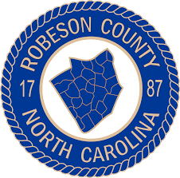

SPARC Regional Hub & Spoke Partnership Model
Southeastern Prevention and Addiction Recovery Resource Center
University of North Carolina at Pembroke • Systems Change Through Evidence-Based Partnerships
 (2).png)

Robeson County

Cumberland County

Richmond County
Scotland County

Columbus County
Bladen County
Systems Change Model: Core Principles
- Upstream Focus: Address root causes rather than symptoms
- Infrastructure Investment: Build sustainable systems
- Evidence-Based Approach: Data-driven decision making
- Regional Coordination: Leverage cross-county resources
Partnership Model Outcomes & Metrics
- 6 County Partnerships (5 active, 1 developing)
- 4+ Evidence-Based Programs Launched
- Workforce Development: Scholarships & internships
- Cross-County Collaboration & resource sharing